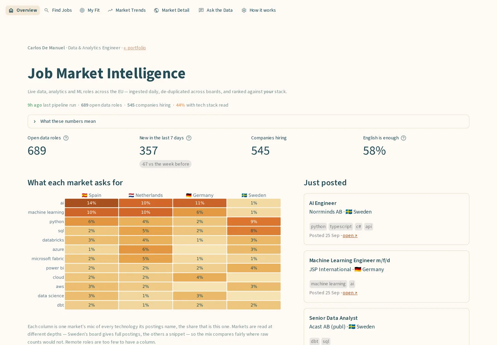
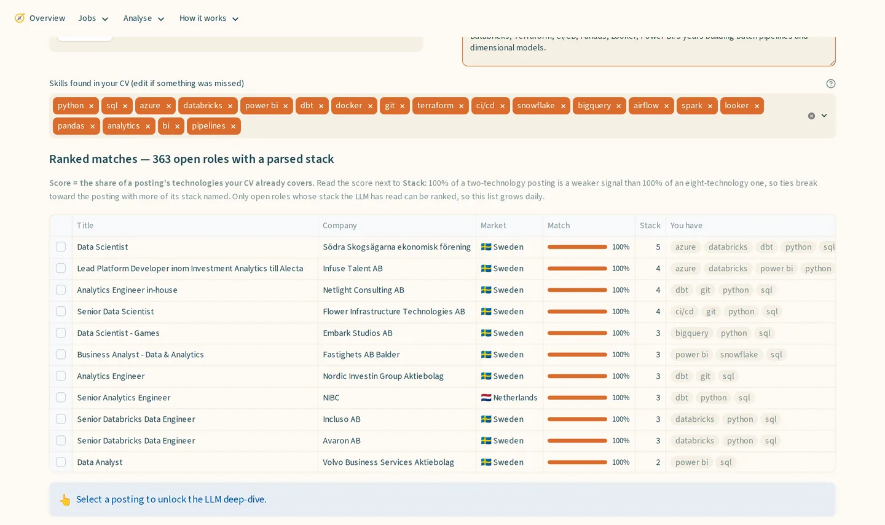
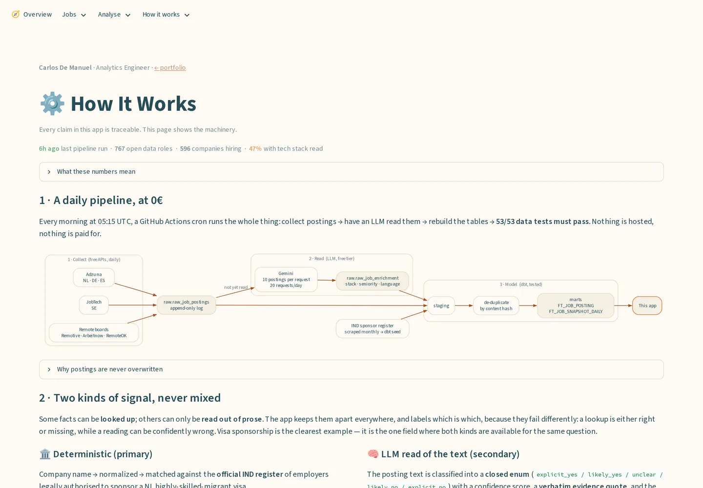
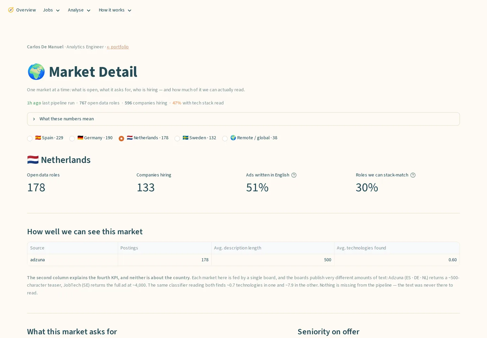
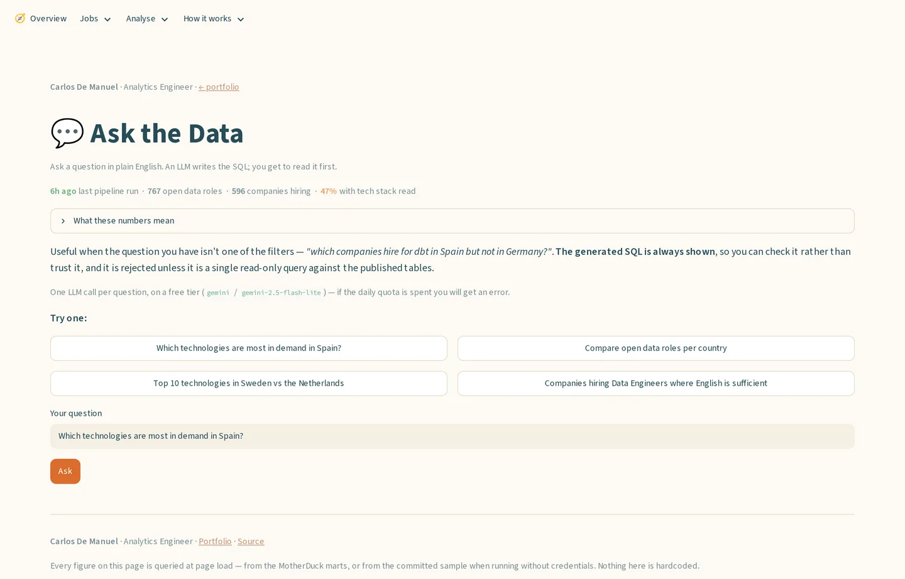
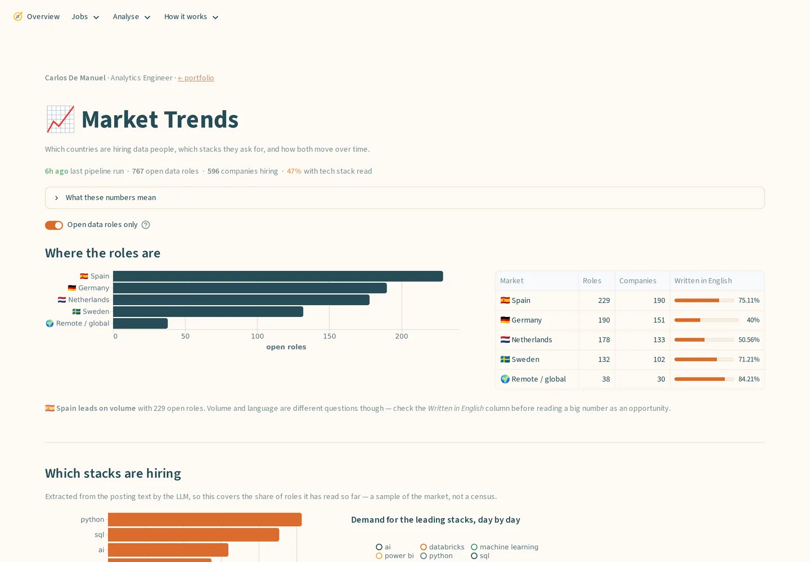

Job Market Intelligence Engine
One question, every morning: which open data roles in the EU are asking for my stack? Five free APIs, an LLM that reads each posting, a dbt medallion on MotherDuck — and a rule that a posting nobody has read yet is never reported as a miss.
Live pipeline state
Static snapshot verified 19 Sep 2026 — dbt test counts read from each project’s manifest.json. The runtime cells stay on this snapshot until a project publishes a status.json feed; neither does yet, and Job Market Intelligence deliberately keeps its run history in the warehouse instead of committing a file daily.
- last ingest
- —
- rows in warehouse
- —
- dbt tests passing
- 53 / 53
- last CI run
- —

The problem
Job boards index on title and location — the two fields that tell you least. The one that decides whether a posting is worth opening is which technologies it actually asks for, and that only exists as prose.
So the pipeline reads for it. Five free APIs land in an append-only log every morning, an LLM reads each posting for its stack, seniority and working language, and a dbt medallion turns that into one canonical row per posting — 767 open data roles across five markets, Spain the largest.
The free tier allows 20 requests a day, so for most of the project's life the model had read only part of the corpus. One rule carried it: a posting nobody has read says “not yet classified”, never “no match.” The backlog is clear now, and the rule matters more — only 47% of roles yield a stack, and the reason is no longer the quota.

Architecture
Streamlit front-end, 7 pages · GitHub Actions cron as the 0€ scheduler (daily, 05:15 UTC) · Prefect-instrumented flows, no hosted worker · uv workspace monorepo, Pydantic v2 contracts, 176 Python tests

Key decisions & why
- Batched the LLM eight-fold on the same free quota. The 429 body named the limit: 20 requests a day, counted in requests rather than tokens. One posting per call spent the whole budget on round trips. Ten now ride in each request — 23 enrichments a day became 180, and a six-month backlog cleared in under three weeks. Each result echoes the index of the posting it answers, because a short or reordered reply would otherwise attach one job's stack to another, silently.
- A chart that looked like a market fact was an artefact of the source. With the queue clear, only 47% of roles still yielded a stack — so the gap was not the quota. It was the boards: Adzuna, which supplies Spain, Germany and the Netherlands, returns a ~500-character teaser where JobTech returns the full ~4,000-character ad, and the same classifier finds ~0.7 technologies in one against ~7.9 in the other. “Sweden asks for dbt more than Spain does” was never a finding. Legibility is now a headline number per market (ADR 0011).
- Facts with an authoritative source are looked up, never inferred. Every employer is cross-referenced against the official IND register of recognised sponsors — 12,797 Dutch employers, 12,793 carrying a KvK number anyone can check by hand. It surfaced a gap no text-reading model could find: 34% of employers on the Dutch corpus are recognised sponsors against 3% on the remote-first boards, and it holds for postings the LLM has never seen.
- The flagship feature was retired on its own evidence. Visa sponsorship was the original pitch. Across 730 postings the classifier said
explicit_yesonce, and 14 hand labels scored 0.000 precision on that class — a class with no support in the corpus. ADR 0007 records the measurement and the reversal; ADR 0011 records the second one, six days later, when the demoted page was still sitting in the navigation behind a passport icon. Eleven ADRs are written this way.
# A batched reply can come back short or reordered. Matching by position
# would then write one job's stack onto another — silently, and with no
# way to detect it later. So each result echoes the index it answers.
for item in batch.results:
if item.index > len(postings) or item.index in seen:
log.warning("enrich.batch.bad_index", index=item.index)
continue
seen.add(item.index)
enrichments.append(self._to_enrichment(postings[item.index - 1], ...))
# Unanswered postings are not retried one by one: the quota this exists
# to stretch is counted in requests. They stay pending, and stay visible
# as "not yet classified" until tomorrow's run picks them up.
Supporting detail
- The classifier is checked against a signal it never sees.
english_sufficientis the model's read of the prose;detected_languageis derived deterministically on ingest and kept out of the prompt. OneGROUP BYover both: of 643 English ads the model says English suffices for 85%, of 255 Dutch ads for 0.4%. Full coverage for the price of one query, reported as agreement between two signals — never as accuracy, because neither is ground truth. - A filled role is not an open one. Boards delete filled roles rather than closing them, so days-since-last-seen is the only liveness signal. It becomes an
is_activeflag measured against the corpus's newest observation, nevercurrent_date— otherwise a stalled pipeline marks the whole market closed on a technicality. - The SQL agent's guarantee sits on the connection. It sees only the marts schema, one SELECT, forced
LIMIT 500. Three of those four guardrails are checks in this repo's code; the fourth is a read-only connection MotherDuck enforces server-side, which is where it belongs, since the free plan issues read/write tokens only.

Results
Model and test counts come from the project's own manifest.json, the sponsor-register size is the row count of the scraped seed, and the market figures are the warehouse's own — nothing here is typed from memory.

Honest status
Production-grade: the dbt medallion, the Pydantic contracts, the IND cross-reference. Demo: five free sources are a fraction of the market — LinkedIn and Indeed sit behind paid anti-bot — and their depth is uneven, which the app now measures per market rather than hiding. Not what it looks like: Prefect is instrumentation, not a deployment — the scheduler is a GitHub Actions cron; there is no Docker, because the Compose scaffolding could not be built here and was deleted rather than left as an untested claim; and no accuracy percentage is claimed for the classifier, only agreement with an independent signal. What I'd do differently: profile the sources before trusting a single cross-market chart — one query on average description length would have caught it, and would have saved both reversals.